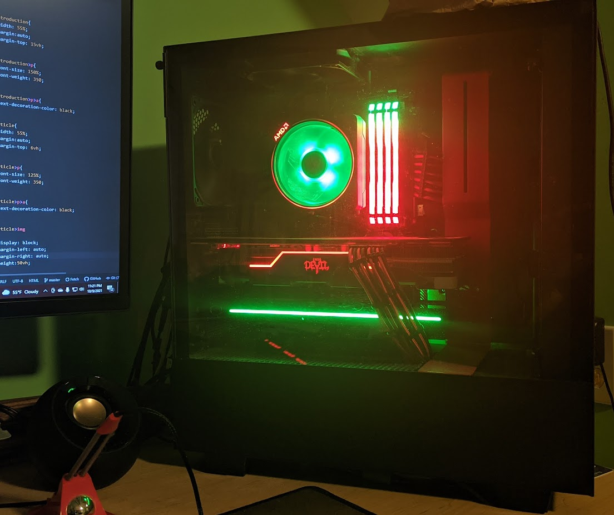

Hi! My name is Zeke Moroze, and I am in the class of 2022 Lexington High School. I currently work at Einstein’s Workshop as an Instructor/Mentor. I am interested in many different subjects and disciplines including: Biology, Psychology, and other life sciences.
I have been employed at Einstein's Workshop as a mentor since the summer of 2019, and recently started doing work as an Instructor in the summer of 2021.
I am a lifelong learner, and am passionate about creating, clothing and fashion, human rights work, activism, and supporting my favorite Premier League team, Arsenal.
Beyond this, I enjoy exercising, drumming, building computers, exploring and listening to all kinds of music in different genres and languages, as well as playing volleyball and soccer.
This digital portfolio contains all my journalism work, both independent and through the Student Newswire, as well as an overview of my most significant personal projects.
Personal Projects
Brief overviews of my extracurricular projects.
In the Spring of 2021, I decided I would start my own clothing brand. I have always had a long-standing interest in fashion since I was a little boy, and starting Globalize was a great way to express that while actually creating something tangible.
The process was not easy, however, as I had to self-teach the fine margins of business. I still have so much to learn, but the process has been invaluable. I learned how to manage an environmentally friendly business and how to set up a tax code. I put my limited web design skills to the test and built my own website from scratch, topped off with working payment portals.
It was also very satisfying to share my love for art with others. Seeing other people being excited about my creations has been a joy that drives me to continue creating and continue making a difference in the world.

General Web Design
In addition to creating the Globalize website from scratch, I took my knowledge further to develop this web portfolio myself.
Computer Building
I taught myself to build computers in seventh grade, and since then I have had a passion for computer hardware. I used to build under the moniker "Hyperdrive PC." I have built around 11 individual computers for family and friends to this day. Below is my current personal build.

Independent Article on Public Transit in Suburbs
I wrote a piece on the local bus in Lexington as well as public transportation in suburban communities in general. This was done in collaboration with the town Director of transportation, Susan Barrett, with MassDOT also involved. This article involved interviewing and research of many different topics, and I got to explore my interests in urban planning and climate change.
Community Service and Involvements
Restructuring and Rebuilding Amnesty International LHS
As a co-president of the LHS Amnesty International chapter, I helped lead an effort to restructure how the club operates. In addition to large scale recruitment efforts, I rebuilt the club to focus more on intimate conversations. I also got our club verified to provide community service hours to members for partaking in activism opportunities.
LHS Student Senate Moderator
I successfully ran to be the LHS Senate Moderator for the school year of 2021-2022. I run senate meetings each week, and am responsible for giving each member an equal voice.
Head of LHS Executive Committee
As part of my duties as senate moderator, I am the head of the Executive Committee. I meet with the principal of LHS biweekly to communicate student concerns and provide a linkage between the student body and administration.
Conservation
I attend weekly trash cleanups around my community as part of my involvement with the Conservation Club.
Journalism Work
I was a founding member of Student Newswire, a publication dedicated to providing bias-free, short articles about world events. All work has been published in the Lexington's local paper, the Colonial Times.
Articles
RUSSIA ORDERS TROOPS TO WITHDRAW FROM UKRAINIAN BORDER
Originally Published April 28, 2021
Russia has recently begun to roll back the presence of its armed forces on its Eastern border with Ukraine. The number of Russian troops had been increasing for a number of weeks, although the amount of troops present has been disputed. Russian State Media claims that 10,000 servicemen and 1,200 units of military equipment were moved in the “inspection” while the European Union estimates that more than 100,000 troops had amassed along the Russo Ukrainian border. The Kremlin claimed that the mobilization was simply a “snap inspection”, but it remains unclear if Russia is trying to de-escalate conflict with Ukraine. Russian State Media claims they are planning to leave a sizable amount of heavy munitions and artillery in Crimea, a Russian-occupied region of Ukraine. Russian Defense Minister Sergei Shoigu cited NATO’s “provocative activities” with an “anti-Russian focus” as causes for the destabilization of the Donbass conflict zone in Ukraine. Pro-Moscow separatists in Eastern Ukraine have been fighting the Ukrainian military for years in hopes of Russian annexation. The region will continue to be a hotbed for international tension as long as Russian forces remain in the area, which will likely be the case for the foreseeable future.
NEW INFRASTRUCTURE BILL PROSPOSED WITH BIPARTISAN SUPPORT
Originally Published August 5th, 2021
A bipartisan infrastructure deal has just been proposed by the Democratic half of the senate with the support of 10 republican senators. Titled the “Infrastructure Investment and Jobs Act”, it is a revised version of President Joe Biden’s “American Jobs Plan”. A few notable changes have allowed this new bill to garner enough bipartisan support to overcome any potential filibuster efforts. This new plan costs $550 billion as opposed to the original’s $2.6 trillion budgeting. This new bill lays out plans to invest $312 billion in transportation. This is down from Biden’s original proposal of $546 billion, with $142 billion specifically being cut from programs promoting electric vehicles in the United States. By far, the biggest cuts from Biden’s original plan were from education, clean energy, and community care. Biden planned to budget $566 billion for research and development of clean energy solutions, additionally providing $424 billion worth of federal clean energy tax credits. $326 billion in housing and education development were cut completely from the bill in this revised version. Republicans were most opposed to these provisions, and their omission will likely see this bill pass with bipartisan support.
HAITIAN IMMIGRATION CRISIS ON US-MEXICO BORDER
Originally Published September 29th, 2021
During the week of September 20th, 2021, footage and photos were released of United States Border Patrol Agents detaining Haitian migrant families, brandishing their horses’ reigns like whips. These accounts have reignited fierce debate on how the worsening immigration crisis should be handled on the US-Mexico border. Many of these Haitian immigrants arrived fleeing political turmoil which resulted in the assassination of Haiti’s president, and several costly natural disasters. On Friday, September 24th, President Joe Biden addressed the harrowing footage, promising that there would be consequences pending an investigation into the Border Patrol Agents on horseback. He also went on to say that “It sends the wrong message around the world,” and that “it’s simply not who we [the United States] are.” Haitian migrants feel as though they in particular are targeted because of the recent evacuation of over 50,000 refugees from Afghanistan following its respective humanitarian crisis. Haitians on the border feel as though they are receiving more adverse treatment. The recent uptick in Haitian immigration is attributed to economic decline in Chile and Brazil due to the COVID-19 pandemic. Many Haitians migrated to these countries following the 2010 earthquake which killed an estimated 200,000 people. This increase has caused further conflict on the US-Mexico border beyond the recent surge from turmoil in Haiti. Now, many migrants are being deported right back to where they started, in Haiti. 2,000 migrants have already been deported to Haiti, with a further 17,400 people either being processed or having deportation hearings.